Education, Training, and Outreach
Crocodile Status Survey
In 2021, the Foundation worked with the Gujarat Forest Department to conduct the first district-wide crocodile survey in 2 decades, resulting in groundbreaking data that changed the entire outlook for crocodile conservation in the region. This initiative included citizen scientists, from all walks of life, collaborating with crocodile experts and scientists to create a full community driven event.
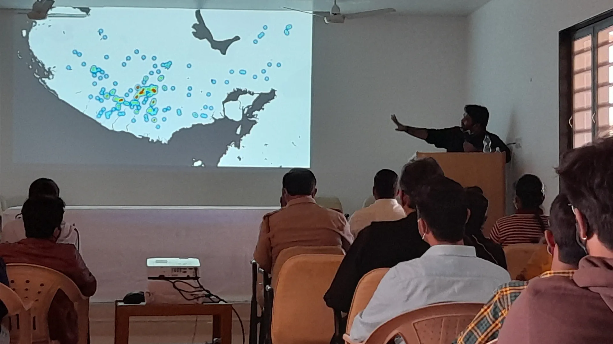
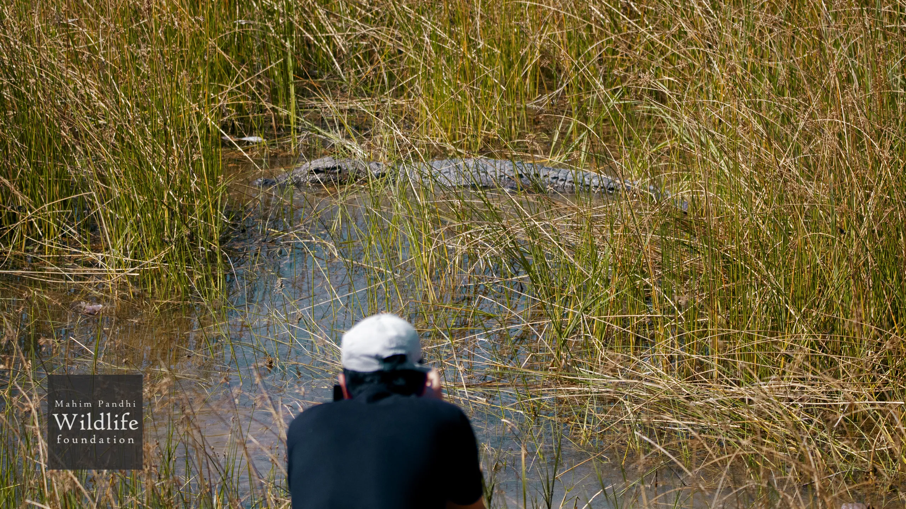
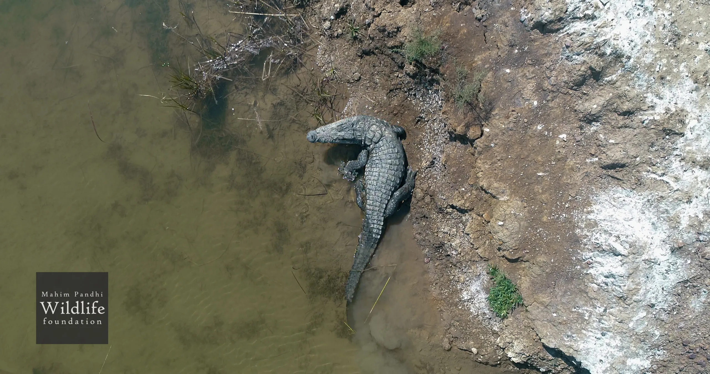
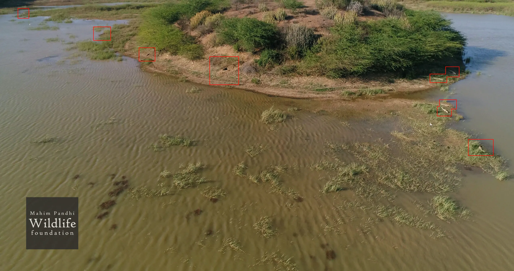
The results of the survey were published in Crocodile Specialist Group Newsletter 41(2): 4-8.
Extensive Nature Education Program
In collaboration with Shishukunj School, an institution widely respected for its holistic educational philosophy, the Mahim Pandhi Wildlife Foundation is developing an immersive nature education program for students.
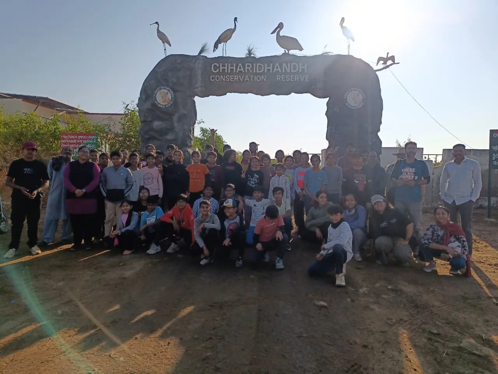
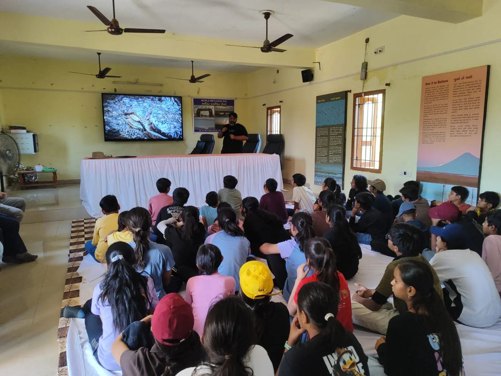
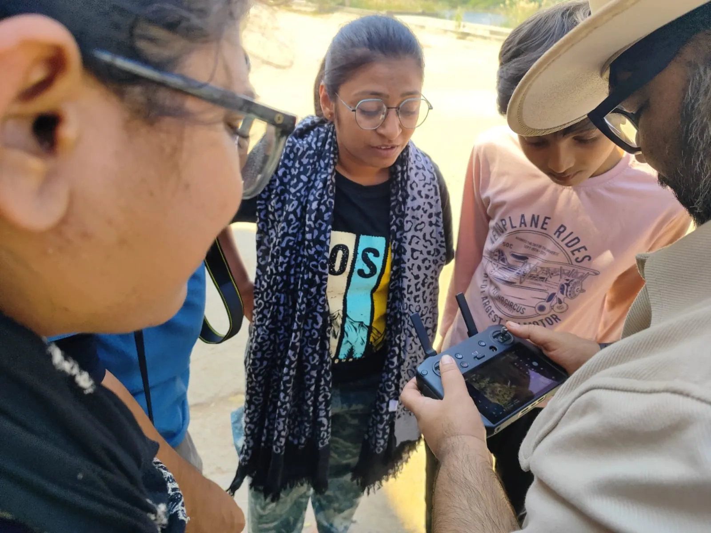
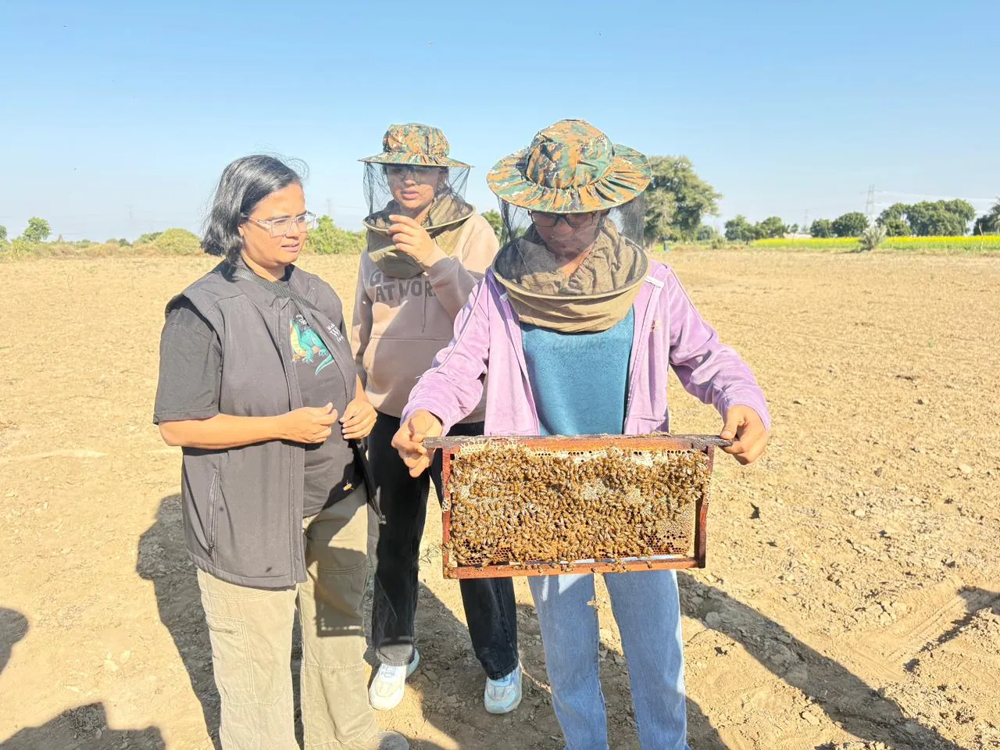
The initiative combines interactive classroom sessions on subjects such as animal communication, insect intelligence, ecology, and wildlife behavior with carefully guided field visits to biologically important habitats. By blending scientific learning with direct exposure to nature, the program aims to foster curiosity, environmental awareness, and a deeper appreciation for wildlife through safe, hands-on experiences led by experts.
Co-guiding BSCE Dissertation Projects
The Foundation collaborates with Lalan College by co-guiding BSCE dissertation projects and mentoring zoology students through both academic and field-based support.
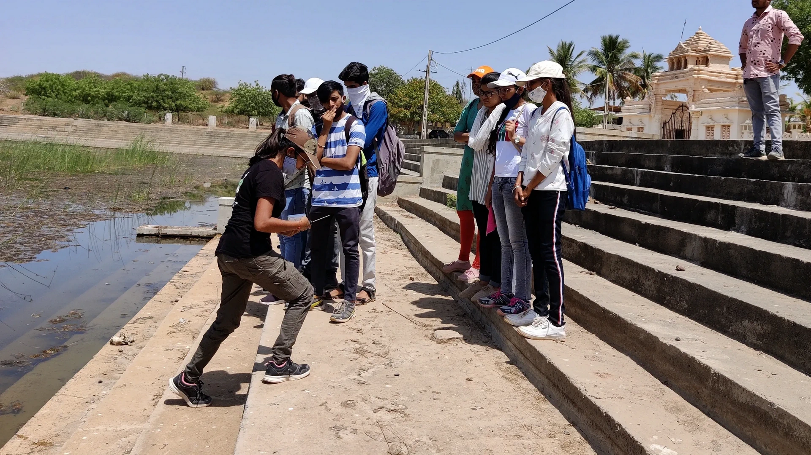
Drawing from our experience in wildlife research and conservation, we assist students with project ideation, field methodologies, data collection, species observation, research design, and practical problem-solving. By combining scientific guidance with hands-on exposure to real-world conservation work, we aim to help students develop stronger research skills and a deeper understanding of wildlife biology and ecology.
Praktrutik Nature Education Shibir at Chhari Dand (Forest Dept)
The Mahim Pandhi Wildlife Foundation has worked with the Gujarat Forest Department on environmental education programs, including the "Prakrutik Nature Education Shibir" at Chhari Dand.
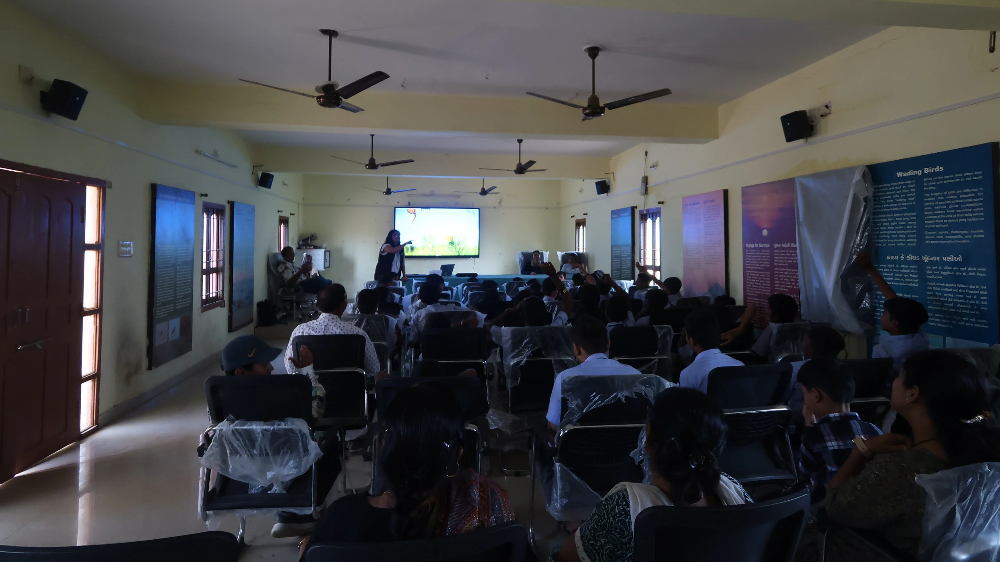
As part of the program, we gave nature and wildlife talks for school students from different schools. The sessions introduced children to the wildlife, ecosystems, and biodiversity of the region in a simple and engaging way.
We also spoke about the importance of conservation and how people can live responsibly alongside nature. Through discussions and field-based learning, the program encouraged students to become more aware of the natural environment around them and develop a stronger interest in wildlife.
World Crocodile Day Educational Trip for Air Force Children (AFWWA)
On World Crocodile Day, June 17, in collaboration with the AFWWA (Air Force Wives Welfare Association). The program was specially designed for children from local Air Force families, many of whom live in close proximity to crocodile habitats around the base, to help them better understand crocodiles and their ecological importance.
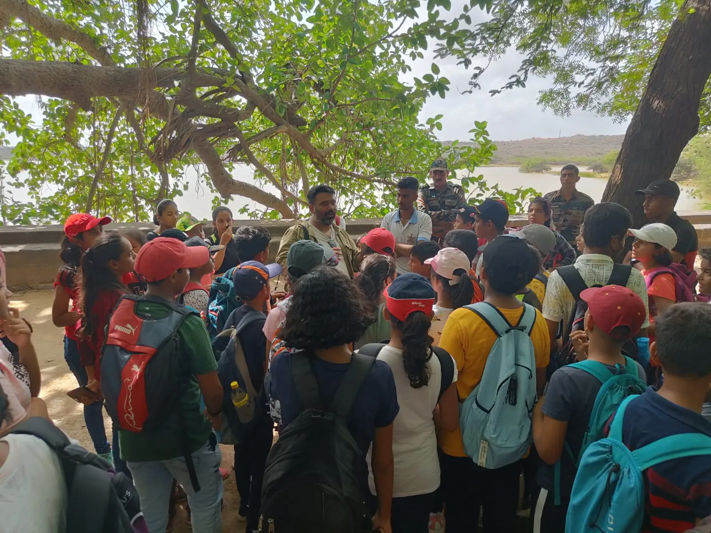
Children excited to discuss crocodiles
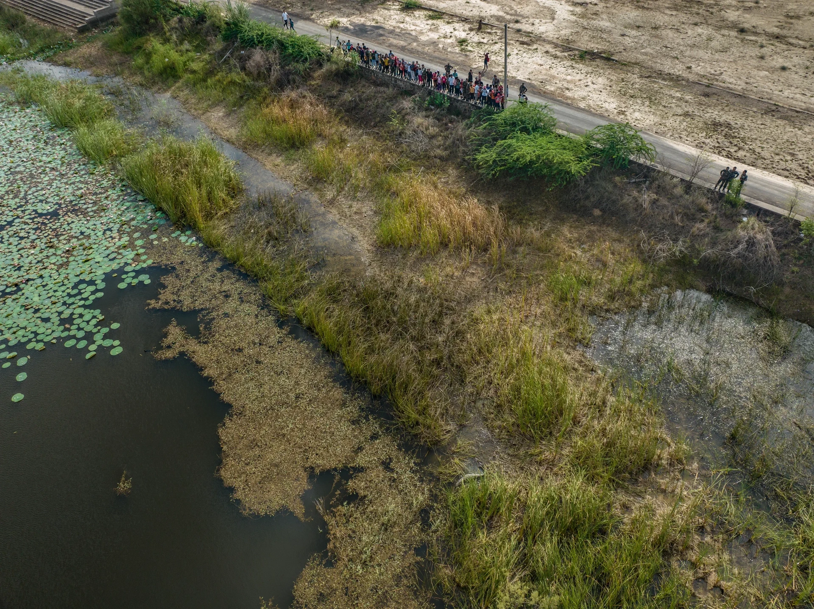
Safely observing a crocodile in the wild
As part of the event, nearly 100 children, along with parents and a group of Air Force officers, participated in a guided field visit where they had the opportunity to observe crocodiles in their natural environment under expert supervision.
Training Forest Dept. for Endangered Turtle Conservation
The Mahim Pandhi Wildlife Foundation helped facilitate specialized training programs in endangered Green Sea Turtle conservation by bringing in experienced experts to work with Forest Department staff and carefully selected local volunteers.
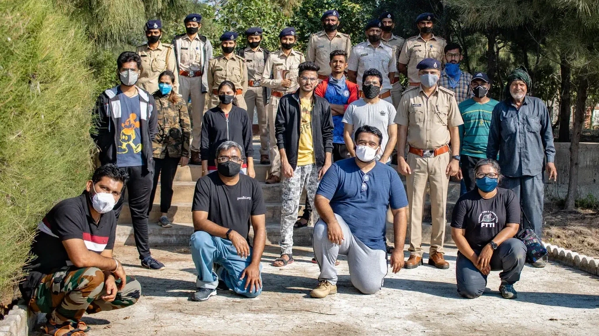
The training focused on practical conservation techniques, including identifying and protecting nesting sites, safely relocating eggs from vulnerable nests, artificial incubation methods, hatchling care, and organized release protocols. These efforts were aimed at strengthening local conservation capacity and improving the survival chances of Green Sea Turtle populations along the region's coastline.
Supporting CrocAttack
The Foundation supports CrocAttack, one of the world's most comprehensive open-source databases documenting human-crocodilian conflict and crocodilian attack records. CrocAttack is a widely lauded endeavor by Brandon Sideleau.
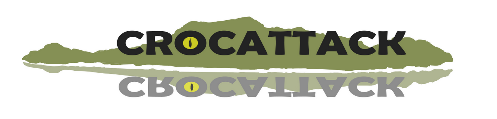
Our role includes providing website hosting infrastructure and assisting with data visualization systems that help present complex global incident data in a clear, accessible, and research-friendly format. Through this collaboration, we help support public education, scientific research, and conservation efforts aimed at improving both human safety and crocodilian coexistence.
Join the adventure
Researchers
We are looking for like-minded people in the fields of herpetology, zoology, and paleontology - who are interested in collaborating with the DesertCrocs project, and beyond. You will get to work with a team of specialists with decades of experience under their belt, and have access to cutting edge technologies.
Students
Are you an undergraduate or postgraduate student? You can gain valuable work experience in the field by joining our projects on a short-term basis. Get in touch with us for details.